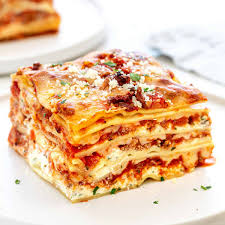

Lasagna
Description
Everyone loves a good lasagna, right? It's a great way to feed a crowd and a perfect dish to bring to a potluck. It freezes well. It reheats well. Leftovers will keep you happy for days.
What is posted here will easily serve eight people. There are a few minor tweaks to his original recipe that I found necessary, for example adding a dash of wine vinegar to the sauce and changing the amount of Parmesan cheese.
Ingredients
For the meat sause:
To assemble the lasanga:
Steps
- Put pasta water on to boil
- Brown the ground beef
- Cook the bell pepper, onions, garlic, add back the beef
- Transfer to medium sized pot, add tomatoes and remaining sauce ingredients to build the sauce
- Boil and drain the lasagna noodles
- Heat the oven to 375°F
- Assemble the lasagna
- Bake
- Cool and serve
Put a large pot of salted water (1 Tbsp salt for every 2 quarts of water) on the stovetop on high heat. It can take a while for a large pot of water to come to a boil (this will be your pasta water), so prepare the sauce in the next steps while the water is heating.
In a large skillet heat 2 teaspoons of olive oil on medium high heat. Add the ground beef and cook until it is lightly browned on all sides.
Remove the beef with a slotted spoon to a bowl. Drain off all but a tablespoon of fat.
In a 9x13-inch casserole or lasagna dish, ladle a cup of sauce and spread it over the bottom of the dish. Arrange one layer of lasagna noodles lengthwise (about 3 long noodles, edge may overlap, depending on your pan) over the sauce. Ladle a third of the remaining sauce over the noodles.
Sprinkle a layer of a third of the grated mozzarella on top of lasagna sauce. Add half of the ricotta cheese, by placing cheese dollops every couple inches. Sprinkle half the grated parmesan cheese evenly over the top of ricotta cheese.
Apply second layer of noodles, top it with half of the remaining sauce. Add half of the remaining Mozzarella, the remaining ricotta cheese, and another the remaining Parmesan.
Finish with another layer of noodles. Spread the remaining sauce over the top layer of noodles and sprinkle with the remaining Mozzarella cheese
Allow the lasagna to cool at least 15 before serving. Leftovers will keep for about 5 days. May be reheated in conventional oven or microwave. Leave aluminum tent on for storage. (Try to keep the aluminum foil from touching the sauce.)